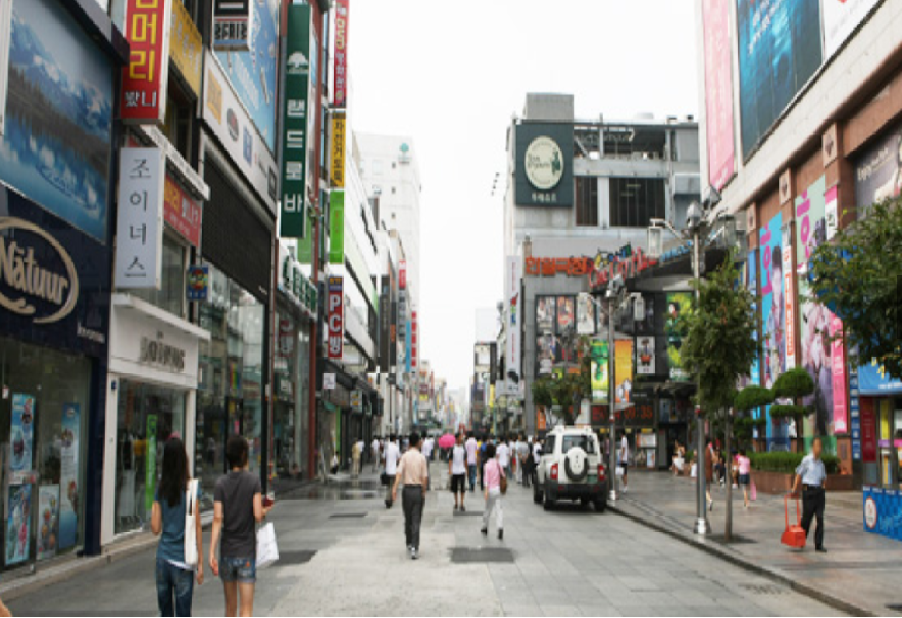
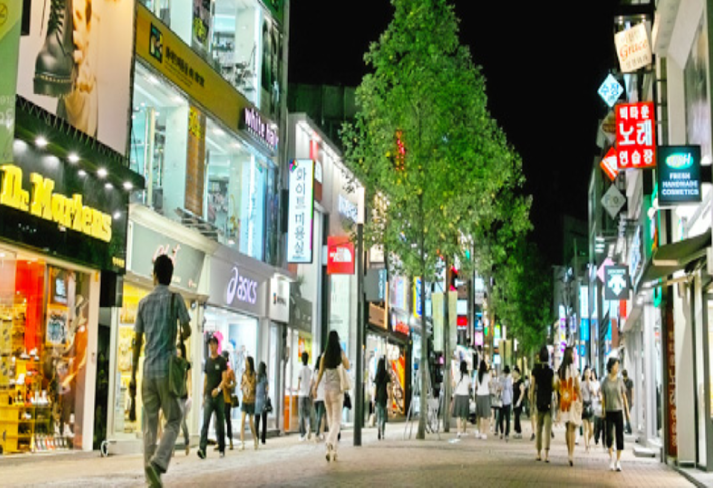
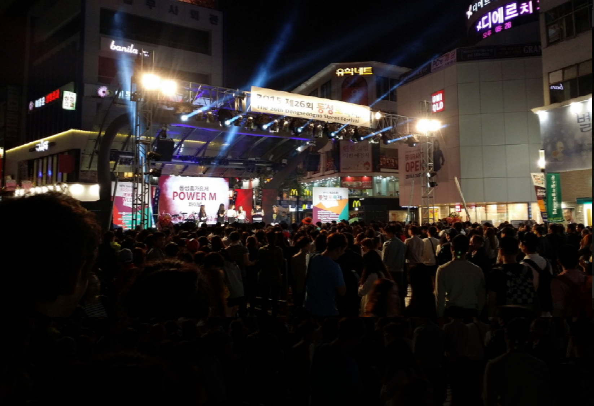

동성로
- 대구 동성로
- 동성로는 대구의 간판거리이자 중심상권으로 젊음과 낭만이 넘쳐나는 거리이다.
동성로에는 쇼핑, 만남, 데이트, 집회, 프로모션, 축제, 쉼, 즐거움, 여유 등 많은 것들이 있다.
이렇게 많은 사람들이 사랑하는 거리가 된 이유는 편리한 교통, 백화점, 쇼핑센터, 패션타운, 호텔, 레스토랑,
병원, 학원가, 전자골목, 귀금속골목, 통신골목을 비롯해 먹거리, 연극, 영화, 예술, 공원, 시민휴식처 등 모든 분야를 아우르는 문화와 쇼핑의 중심 거리이기 때문이다.

동성로
- 대구 동성로
- 대구에서 유일하게 “시내”로 불리는 이곳은 최신유행의 옷가게와 잡화점, 화장품과 액세서리, 여러종류의 음식점 등 관광, 문화, 축제, 쇼핑 모든 콘텐츠를 아울러
서울의 명동에 비견되는 대구의 대표 거리라 할 수 있다.
동성로거리는 공공디자인사업으로 동성로 보행자 전용도로로 붉은 점토 블록을 깔아 "걷기 좋은 거리"로 조성되었으며,
거리 구간마다 벤치를 설치하고 목백합과 대왕침나무 40여 그루 식재, 공연무대, 바닥야간조명, 분수 등도 설치해 젊은이들이 걷고 싶은 거리로 만들었다.

동성로
- 대구 동성로
- 동성로 축제는 1990년부터 시작되어 지난 22년간 지역문화, 지역산업과 함께 호흡하며 매년 개최하고 있는 대구의 중심 문화 축제이다.
특히 21세기에 들어와서는 세계화 속에서 한국의 중심상권이자 대구경북 젊음의 거리 동성로에서 여러나라 다양한 사람들에게 한국문화의 전통성과 우수성을 알리고 있으며,
매년 새로운 프로그램들을 가미해 가며 개성있는 축제로 발전시켜 나가고 있다.
또한, 동성로 축제를 통해 시민들에게 대구 시민으로서의 자긍심을 함양하고, 축제의 국제관광 상품화로 한국의 경제를 포함한 지역경제의 활성화에 기여하고 있다.
나아가 문화를 통한 화합과 새로운 비전을 제시함으로써, 한층 더 나은 발전을 시도하고 있고 있는 대구 중구의 대표적인 축제라 할 수 있다.
